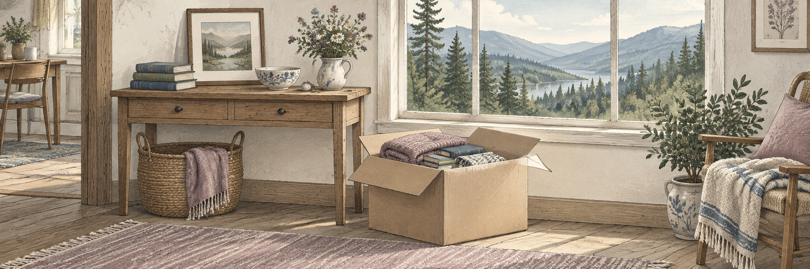

Organization
De-Clutter Your Life—Your Family Will Thank You

A home holds more than belongings. It holds the dishes from family dinners, the books from a favorite chapter of life, the tools you learned to use, and the things you kept because someone you loved once held them.
Sorting through those possessions can feel surprisingly personal. You do not have to empty your home or give away everything meaningful. The aim is to make everyday life more manageable and leave the people you love with fewer things to guess about later.
Start with a small space and a little time. You can decide what comes next after that.
Choose one manageable place
Begin with a drawer, a shelf, or a small cupboard. Save the boxes of photographs and deeply sentimental belongings for another day. Everyday items can offer an easier place to practice making decisions.
Set aside fifteen or twenty minutes if that feels comfortable. Choose a space you can leave usable when you stop, rather than pulling apart a whole room.
Give each item a next step
As you sort, group belongings by what you want to do with them:
- Keep: things you use, need, or enjoy having around you.
- Offer or donate: usable items someone else may want.
- Sell: items you are willing to spend time pricing and passing on.
- Recycle or discard: items that are no longer useful and cannot reasonably be repaired.
- Decide later: a small group of belongings that need more thought.
For the “decide later” group, choose a time to revisit it. You are giving yourself breathing room, rather than requiring an answer to every question today.
Keep what matters to your life now
Ask yourself: Do I use this? Does it bring me pleasure? Would I choose to make room for it again?
Something does not have to be practical to earn its place. A treasured photograph or an old letter may matter more than a cupboard full of useful duplicates. You are allowed to keep things simply because you love them.
Equally, you do not have to keep a gift forever to appreciate the person who gave it to you.
Ask before passing things to family
If you hope someone will want a particular item, ask them. “Would you enjoy having this?” gives them room to answer honestly.
Try not to treat a “no” as a rejection of you or your memories. Their space, needs, and tastes may be different. If several people want the same thing, pause and talk together rather than making rushed promises.
For belongings you keep, a simple note about their history can be a gift in itself. Who made the quilt? Where was the photograph taken? Why did that ordinary-looking bowl matter so much? Record the story while you can tell it.
Take extra care with uncertain items
Put important paperwork, unidentified keys, photographs, and anything you think may be valuable aside for a separate review. Do not discard something simply because its purpose or value is unclear.
If you are sorting a shared home or helping someone else, ask before moving or giving away their belongings. Help can mean carrying boxes, arranging pickups, or keeping someone company while they make their own decisions.
Finish the small task you started
A donation box by the door is a useful beginning. Choosing its destination makes the task easier to finish. Check what a recipient accepts and arrange a drop-off or collection that fits your energy and schedule.
If selling an item would take more effort than you want to spend, consider another option. You do not have to turn every possession into a project.
Before stopping, put the things you are keeping back where you can find them. A clear shelf or a drawer that closes easily is real progress.
Let the pace be yours
Some days you may sort a whole cupboard. On others, one object will bring up enough memories to make you pause. There is no need to push through every feeling or make decisions while you are exhausted.
Decluttering can be an act of care for your family, but it can also make your own days easier now: less searching, more usable space, and the things you enjoy close at hand.
Choose one small area. Keep what matters. Give yourself permission to take your time.